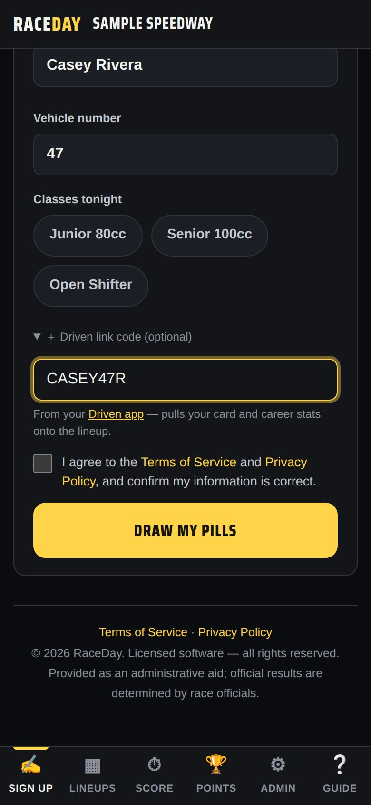

-
Sign up as usual
At the sign-up table (or the track's sign-up tablet), type your name and car number and tap the classes you're racing.

RaceDay sign-up -
Add your link code
Tap ＋ Driven link code, type your code, then tap Draw my pills. Your card and stats now show on the track's lineup.
-
No code handy?
Open Driven's Link page and show the QR code, or ask the race director to link you later — they can use Link Driven card on your driver card in RaceDay.

Your QR code -
Next time, just tap your name
Returning drivers tap their name under "Raced here before?" — your link stays with you at that track.
-
See your linked tracks
The Link tab lists every track you're linked to, with how many races each has recorded. Unlink removes one.
Good to know
- Your link code is safe to share — it only shows your public card.
- Racing at a track that doesn't use RaceDay? Your card and page still work; results just won't arrive automatically.
Next guides
Still stuck? The Driver FAQ covers common questions, and the Field Manual walks through every Driven screen. Or just ask.
Email a question →